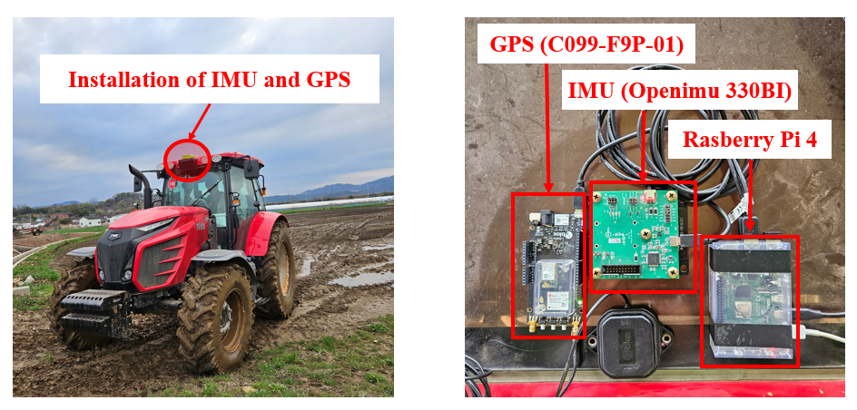

시계열 분류
IMU의 시간적 변화와 진동 패턴을 LSTM 입력으로 구성.
SCIE JOURNAL · STATE ESTIMATION
IMU 시계열 분류와 상태 전이 규칙을 결합해 트랙터의 도로·농경지 주행 상태를 판별하고 항법 센서를 전환한 반자율 항법 시스템.

01 / PROBLEM
농로와 농경지의 진동 특성이 다르지만 GNSS 신호만으로는 현재 주행 상태를 안정적으로 구분하기 어려운 문제. 순간 분류 결과를 그대로 센서 전환에 사용하면 항법 모드가 빈번히 흔들리는 한계.
02 / DESIGN
IMU의 시간적 변화와 진동 패턴을 LSTM 입력으로 구성.
한 번의 오분류로 항법 상태가 바뀌지 않도록 전환 조건과 유지 규칙 적용.
실제 농로와 농경지에서 트랙터 운행 데이터를 수집해 훈련·검증.
분류 결과를 센서 선택과 위치추정 모드 전환에 연결.
03 / EVIDENCE